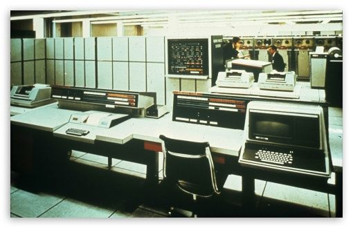

Titanic

The History of Computer
1. Introduction:
Computers have come a long way since their inception, evolving from massive machines that occupied entire rooms to sleek and powerful devices that fit in our pockets. In this article, we will explore the fascinating history of the world's oldest computers, tracing their origins and milestones in the field of computing. From early calculating machines to groundbreaking mechanical inventions, these pioneering computers set the stage for the digital revolution that would follow.
2. The Antikythera Mechanism (circa 150-100 BCE):
- Built by the Harland and Wolff shipyard in Belfast, Northern Ireland.
- The Titanic had a length of 882 feet 9 inches (269.1 meters) and a maximum breadth of 92 feet 6 inches (28.2 meters).
- It had a total of nine decks, with accommodations for approximately 2,435 passengers and a crew of around 900 people.
- The ship weighed approximately 46,328 gross registered tons (GRT).
3. Passenger Amenities and Facilities:
- Often considered the world's oldest known analog computer, the Antikythera Mechanism was discovered in 1900 on a sunken ship near the Greek island of Antikythera. Dating back to the first century BCE, this intricate device featured a complex system of gears and dials, capable of predicting celestial positions and eclipses.
Charles Babbage's Analytical Engine (1837-1871):
Designed by the British mathematician and engineer Charles Babbage, the Analytical Engine is widely regarded as a precursor to modern computers. Although never fully completed during his lifetime, Babbage's design incorporated key computing concepts such as loops, conditional branching, and storage, laying the foundation for future programmable machines.
Harvard Mark I (1944):
Developed during World War II by Howard Aiken and his team at Harvard University, the Mark I was one of the first electromechanical computers. It utilized thousands of electromechanical switches and provided calculations for military research and ballistics, setting the stage for the digital computing era.
ENIAC (1946):
The Electronic Numerical Integrator and Computer (ENIAC) is often considered the world's first general-purpose electronic computer. Built at the University of Pennsylvania, the ENIAC utilized vacuum tubes and could perform complex calculations, aiding in various scientific and military endeavors.
Manchester Baby (1948):
Also known as the Small-Scale Experimental Machine (SSEM), the Manchester Baby was the world's first electronic stored-program computer. Developed by Frederic C. Williams and Tom Kilburn at the University of Manchester, it demonstrated the feasibility of storing computer programs in electronic memory, marking a significant advancement in computing technology.
EDSAC (1949):
The Electronic Delay Storage Automatic Calculator (EDSAC), developed by Maurice Wilkes and his team at the University of Cambridge, was one of the earliest practical stored-program computers. It employed a mercury delay line memory and contributed to groundbreaking research in fields such as biology, meteorology, and nuclear physics.
Conclusion:
Regenerate response
4. Harvard Mark I (1944):
-Developed during World War II by Howard Aiken and his team at Harvard University, the Mark I was one of the first electromechanical computers. It utilized thousands of electromechanical switches and provided calculations for military research and ballistics, setting the stage for the digital computing era.
5. Sinking of the Titanic:
- On the night of April 14, 1912, the Titanic struck an iceberg in the North Atlantic Ocean, about 375 miles (600 kilometers) south of Newfoundland.
- The collision caused severe damage to the ship's hull, leading to its eventual sinking.
- Despite its advanced safety features, including watertight compartments, the ship could not withstand the flooding caused by the iceberg damage.
- The Titanic sank in the early hours of April 15, 1912, with the loss of more than 1,500 lives.